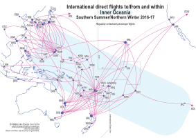

(While this page is already public, this page is not yet ready. It will probably be hosted somewhere else when this page is 'ready'. If you have reached here, welcome anyway!)
'Inner Oceania' here refers to the islands of Oceania minus the better-connected New Zealand, Australia (see here for Norfolk Island), and Hawaiʻi. All regularly-scheduled international passenger direct flights to/from the airports in this region – during Northern Winter/Southern Summer 2016-2017 – are shown in this map. (Details will be checked again as late 2016 approaches.) There are 31 airports with international flights in the region; they are shown as stars on the map (the two airports of Apia share one star). Destinations outside the region are shown as circles, or arrows if they are off the map.
Inter-connectivity within Inner Oceania is relatively poor when compared to the Pacific Rim. The most practical way of travelling between the stars sometimes involves flights via a circle, or sometimes even flights between two or more circles, which are not shown in the map. If you are serious about travelling to/from/within Inner Oceania, it is best to consult flight search engines. (This map is only for FUN. Perhaps for a network-theory exercise.)
Not shown in this map are charter flights and seasonal flights for Northern Summer/Southern Winter. New Guinea has numerous mining-related charter flights to major destinations in Indonesia and Australia. Some islands see many charter flights for tourists from the Pacific Rim. In the Southern Winter there are many more seasonal flights from Australia/New Zealand to the South Pacific Islands.
Domestic flights are also not shown in this map, except for domestic sectors of international direct flights (SPN–ROP, MAJ–KWA, VLI–SON, IPC–SCL). Amongst the stars, domestic passenger flights also exist between NAN–SUV and TBU–VAV. Immigration control exists amongst the four states of the Federated States of Micronesia (main airports: YAP, TKK, PNI, KSA), and flights between them are not considered domestic.
There are very few international ferry services in the region, but some islands are frequented by cruise ships.The only roads that exist between the stars are between NAN and SUV, and between APW and FGI.
The following are some further information. Due to my currently-limited coding ability, the information is listed here just as texts; you can do a text-search (cltr+F/⌘+F) on the following texts. For example, if you search for Kosrae, you will see that Kosrae is served by two airlines, and you can deduce that the best ways to reach the Pacific Rim from Kosrae involves going via: a) Kosrae KSA – Pohnpei PNI – Chuuk TKK – Guam GUM with United Airlines; b) Kosrae KSA – Kwajalein KWA – Majuro MAJ – Honolulu HNL with United Airlines; c) Kosrae KSA – Majuro MAJ – Tarawa TRW – Nauru INU – Nadi NAN with Nauru Airlines; or d) Kosrae KSA – Majuro MAJ – Tarawa TRW – Nauru INU – Honiara HIR – Brisbane BNE with Nauru Airlines.
(Check whether airlines are operated regular flights to Port Vila VLI due to runway maintainance works.)
The following are the 31 airports with international flights in the region, plus some other names associated with them.
Micronesia: Guam GUM (PGUM, Antonio B. Won Pat, Hagåtña, Agana) Rota ROP (PGRO, Benjamin Taisacan Manglona, Northern Marianas) Saipan SPN (PGSN, Francisco C. Ada, Northern Marianas) Koror ROR (PTRO, Roman Tmetuchl, Babelthuap, Palau) Yap YAP (PTYA, Wa'ab, Federated States of Micronesia, FSM) Chuuk TKK (PTKK, Weno, Moen, Truk, Federated States of Micronesia, FSM) Pohnpei PNI (PTPN, Ponape, Palikir, Kolonia, Federated States of Micronesia, FSM) Kosrae KSA (PTSA, Federated States of Micronesia, FSM) Kwajalein KWA (PKWA, Bucholz, Ebeye, Marshall Islands) Majuro MAJ (PKMJ, Amata Kabua, Marshall Islands) Nauru INU (ANYN) Tarawa TRW (NGTA, Bonriki, Kiribati) Kiritimati CXI (PLCH, Cassidy, Christmas, Kiribati) Melanesia: Port Moresby POM (AYPY, Jacksons, Papua New Guinea, PNG) Honiara HIR (AGGH, Henderson, Guadalcanal, Solomon Islands) Luganville SON (NVSS, Santo-Pekoa, Espiritu Santo, Sanma, Vanuatu) Port Vila VLI (NVVV, Bauerfield, Efate, Éfaté, Shefa, Vanuatu) Nouméa NOU (NWWW, La Tontouta, Noumea, Païta, Nouvelle-Calédonie, New Caledonia) Nadi NAN (NFFN, Lautoka, Viti Levu, Fiji) Suva SUV (NFNA, Nausori, Luvuluvu, Viti Levu, Fiji) Polynesia: Funafuti FUN (NGFU, Tuvalu) Wallis WLS (NLWW, Hihifo, Mata-Utu, Wallis-et-Futuna, Wallis and Futuna) Vava'u VAV (NFTV, Lupepau'u, Vavau, Tonga) Nuku'alofa TBU (NFTF, Fua'amotu, Nukualofa, Tongatapu, Tonga) Apia APW (NSFA, Faleolo, 'Upolu, Samoa) Apia FGI (NSFI, Fagali'i, Fagalii, 'Upolu, Samoa) Pago Pago PPG (NSTU, Tafuna, Tutuila, American Samoa) Niue IUE (NIUE, Hanan) Rarotonga RAR (NCRG, Avarua, Cook Islands) Pape'ete PPT (NTAA, Fa'a'ā, Faaa, Papeete, Tahiti, Polynésie française, French Polynesia) Easter Island IPC (SCIP, Mataveri, Hanga Roa, Rapa Nui, Rapanui, Isla de Pascua)
The following are the airlines and routes involved:
United Airlines (UA): Guam GUM – Sapporo CTS Guam GUM – Sendai SDJ Guam GUM – Tokyo NRT Guam GUM – Nagoya NGO Guam GUM – Osaka KIX Guam GUM – Fukuoka FUK Guam GUM – Shanghai PVG Guam GUM – Hong Kong HKG Guam GUM – Manila MNL Guam GUM – Koror ROR – Manila MNL Guam GUM – Koror ROR Guam GUM – Yap YAP – Koror ROR Guam GUM – Yap YAP Guam GUM – Chuuk TKK – Pohnpei PNI Guam GUM – Chuuk TKK – Pohnpei PNI – Kwajalein KWA – Majuro MAJ – Honolulu HNL Guam GUM – Chuuk TKK – Pohnpei PNI – Kosrae KSA – Kwajalein KWA – Majuro MAJ – Honolulu HNL Guam GUM – Honolulu HNL Guam GUM – Rota ROP Guam GUM – Saipan SPN Guam GUM – Rota ROP – Saipan SPN Star Marianas Air: Rota ROP – Guam GUM Saipan SPN – Guam GUM Delta Air Lines (DL): Guam GUM – Tokyo NRT Guam GUM – Osaka KIX – Tokyo NRT – New York JFK Saipan SPN – Tokyo NRT Koror ROR – Tokyo NRT Japan Airlines (JL): Guam GUM – Tokyo NRT Korean Air Lines (KE): Guam GUM – Osaka KIX – Jeju CJU Guam GUM – Busan PUS Guam GUM – Seoul ICN Koror ROR – Seoul ICN Nadi NAN – Seoul ICN Asiana Airlines (OZ): Saipan SPN – Busan PUS Saipan SPN – Seoul ICN Koror ROR – Seoul ICN t’way Air (TW): Guam GUM – Osaka KIX – Daegu TAE Air Busan (BX): Guam GUM – Busan PUS Jeju Air (7C): Guam GUM – Seoul ICN China Eastern Airlines (MU): Saipan SPN – Beijing PEK Sichuan Airlines (3U): Saipan SPN – Shanghai PVG – Chengdu CTU Saipan SPN – Guangzhou CAN – Chengdu CTU Hong Kong Airlines (HX): Saipan SPN – Hong Kong HKG China Airlines (CI): Guam GUM – Taipei TPE Koror ROR – Taipei TPE EVA Air (BR): Guam GUM – Taipei TPE Philippine Airlines (PR): Guam GUM – Manila MNL Saipan SPN – Manila MNL Port Moresby POM – Manila MNL Cebu Pacific Air (5J): Guam GUM – Manila MNL Nauru Airlines (ON): Nauru INU – Brisbane BNE Nauru INU – Honiara HIR – Brisbane BNE Nauru INU – Nadi NAN Nauru INU – Tarawa TRW – Majuro MAJ Majuro MAJ – Kosrae KSA – Chuuk TKK – Pohnpei PNI Fiji Airways (FJ): Nadi NAN – Los Angeles LAX Nadi NAN – San Francisco SFO (summer/winter peak) Nadi NAN – Honolulu HNL Nadi NAN – Kiritimati CXI – Honolulu HNL Nadi NAN – Apia APW – Honolulu HNL Nadi NAN – Hong Kong HKG Nadi NAN – Singapore SIN Nadi NAN – Brisbane BNE Nadi NAN – Sydney SYD Nadi NAN – Melbourne MEL Nadi NAN – Auckland AKL Nadi NAN – Wellington WEL Nadi NAN – Christchurch CHC Nadi NAN – Nuku'alofa TBU Nadi NAN – Vava'u VAV Nadi NAN – Apia APW Nadi NAN – Tarawa TRW Nadi NAN – Honiara HIR Nadi NAN – Port Vila VLI Suva SUV – Sydney SYD Suva SUV – Auckland AKL Suva SUV – Nuku'alofa TBU Suva SUV – Apia APW Suva SUV – Funafuti FUN Suva SUV – Port Vila VLI Aircalin (SB): Nouméa NOU – Tokyo NRT Nouméa NOU – Osaka KIX Nouméa NOU – Brisbane BNE Nouméa NOU – Sydney SYD Nouméa NOU – Melbourne MEL Nouméa NOU – Auckland AKL Nouméa NOU – Pape'ete PPT Nouméa NOU – Wallis WLS Nouméa NOU – Nadi NAN – Wallis WLS Nouméa NOU – Port Vila VLI Air Vanuatu (NF): Port Vila VLI – Brisbane BNE Port Vila VLI – Luganville SON – Brisbane BNE Port Vila VLI – Sydney SYD Port Vila VLI – Auckland AKL Port Vila VLI – Nadi NAN Port Vila VLI – Honiara HIR Port Vila VLI – Nouméa NOU Solomon Airlines (IE): Honiara HIR – Brisbane BNE Honiara HIR – Sydney SYD Honiara HIR – Port Vila VLI Honiara HIR – Nadi NAN Air Niugini (PX): Port Moresby POM – Tokyo NRT Port Moresby POM – Manila MNL Port Moresby POM – Hong Kong HKG Port Moresby POM – Singapore SIN Port Moresby POM – Denpasar DPS Port Moresby POM – Cairns CNS Port Moresby POM – Sydney SYD Port Moresby POM – Brisbane BNE Port Moresby POM – Honiara HIR – Port Vila VLI Port Moresby POM – Honiara HIR – Nadi NAN Polynesian Airlines (PH): Apia FGI – Pago Pago PPG Inter Island Airways: Pago Pago PPG – Apia APW (Does not seem to be running on fixed schedule.) Hawaiian Airlines (HA): Pago Pago PPG – Honolulu HNL Pape'ete PPT – Honolulu HNL Air Tahiti (VT): Pape'ete PPT – Rarotonga RAR Air Tahiti Nui (TN): Pape'ete PPT – Los Angeles LAX – Paris CDG Auckland AKL – Pape'ete PPT – Los Angeles LAX Pape'ete PPT – Tokyo NRT Air France (AF): Pape'ete PPT – Los Angeles LAX – Paris CDG LATAM Airlines Chile (LA): Pape'ete PPT – Easter Island IPC – Santiago de Chile SCL Air New Zealand (NZ): Pape'ete PPT – Auckland AKL Rarotonga RAR – Auckland AKL Los Angeles LAX – Rarotonga RAR – Auckland AKL Rarotonga RAR – Sydney SYD Niue IUE – Auckland AKL Apia APW – Auckland AKL Nuku'alofa TBU – Auckland AKL Nadi NAN – Auckland AKL Nadi NAN – Wellington WLG (southern winter) Nadi NAN – Christchurch CHC Port Vila VLI – Auckland AKL Nouméa NOU – Auckland AKL Virgin Samoa Airlines (VA): Apia APW – Auckland AKL Apia APW – Sydney SYD Apia APW – Brisbane BNE Virgin Australia Airlines (VA): Rarotonga RAR – Auckland AKL Rarotonga RAR – Christchurch CHC (southern winter) Nuku'alofa TBU – Auckland AKL Nuku'alofa TBU – Sydney SYD Nadi NAN – Brisbane BNE Nadi NAN – Sydney SYD Nadi NAN – Melbourne MEL Port Vila VLI – Brisbane BNE Honiara HIR – Brisbane BNE Port Moresby POM – Brisbane BNE Qantas Airways (QF): Nouméa NOU – Brisbane BNE Nouméa NOU – Sydney SYD Port Moresby POM – Cairns CNS Jetstar Airways (JQ): Rarotonga RAR – Auckland AKL Nadi NAN – Gold Coast OOL Nadi NAN – Sydney SYD
Some more additional information that is not shown in the map. The following are the airlines with domestic passenger flights that I know of.
Star Marianas Air (Northern Marianas: Saipan SPN, Tinian TIQ, Rota ROP) Belau Air (Palau: Koror ROR, Peliliu, Angaur) Pacific Mission Aviation (On demand flights, e.g. Palau, Yap state) Caroline Islands Air (On demand flights, e.g., Yap state, Chuuk state, Pohnpei state.) Air Marshall Islands (CW) Air Kiribati (4A) Coral Sun Airways (Kiribati. On demand(?)flights. Flights to Phoneix and Line Islands(?). Otherwise the only way of getting between Tarawa TRW and Kiritimati CXI is flying internationally via NAN with Fiji Airways (FJ).) Fiji Airways (FJ) Northern Air (Fiji) Air Calédonie (TY) (New Caledonia) Air Vanuatu (NF) Solomon Airlines (IE) Air Niugini (PX) (Papua New Guinea) PNG Air (Papua New Guinea) Travel Air (Papua New Guinea) (Check Indonesian airlines.) Real Tonga (RT) Aircalin (SB) (Does not operate domestically within New Caledonia, but operates the domestic flight between Wallis WLS and Futuna FUT, usually daily except Sunday. However, this flight is apparently not bookable online.) Polynesian Airlines (PH) (Does not operate scheduled passenger flights within Sāmoa, but operates domestic flights within American Sāmoa: Pago Pago PPG – Fiti'uta/Ta'ū FTI, Pago Pago PPG – Ofu OFU.) Inter Island Airways (Operating Pago Pago PPG – Fiti'uta/Ta'ū FTI (?)) Air Rarotonga (GZ) (Cook Islands) Air Tahiti (VT) (French Polynesia) LATAM Airlines Chile (LA) (Easter Island IPC – Santiago de Chile SCL)In addition:
(Only airlines operating scheduled passenger routes within Hawaiʻi listed here.) Hawaiian Airlines (HA) Mokulele Airlines (MW) Island Air (WP) New Zealand Norfolk Island to Australia Australia